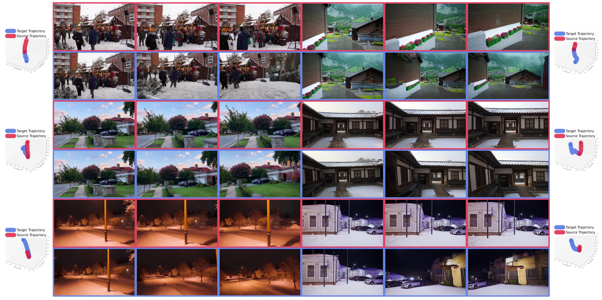
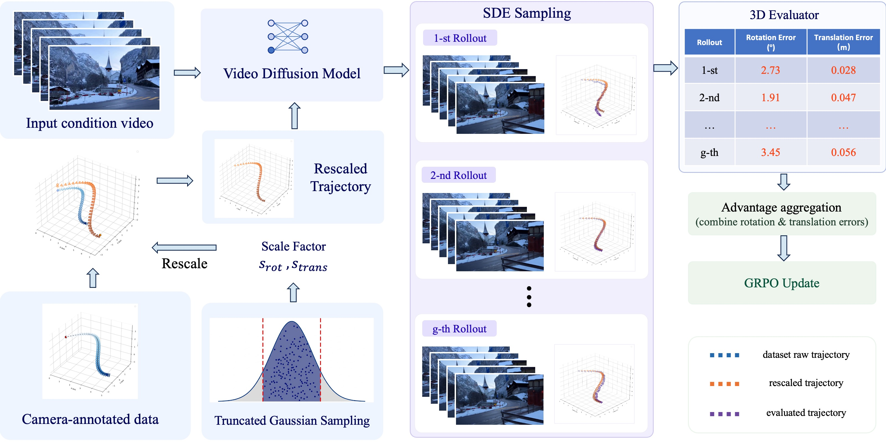

Geo-Align: Video Generation Alignment via Metric Geometry Reward
* Corresponding author.

Given a conditioning video, Geo-Align synthesizes a novel view video according to the target camera trajectory.
Abstract
Camera-controlled video generation has achieved remarkable progress in recent years. However, existing video-to-video re-rendering methods primarily rely on Supervised Fine-Tuning using synthetic datasets. At present, there is an extreme scarcity of synchronized, multi-view real-world video data. Consequently, the prevailing paradigm often exhibits limited generalization when processing out-of-distribution real-world videos, with models struggling to accurately adhere to physical scales and camera trajectories. To bridge this gap, we propose Geo-Align, the first Reinforcement Learning framework specifically designed for camera-controlled video re-rendering. Built upon a pretrained model, we optimize the model through a scale-aware perceptual reward mechanism. Specifically, we introduce a metric 3D estimator to extract precise camera trajectories from generated videos, explicitly penalizing deviations in rotation and translation. Furthermore, we meticulously designed a data pipeline strategy based on real-world conditioning videos and target camera trajectories derived from synthetic data, eliminating the reliance on paired data. Extensive experiments demonstrate that Geo-Align consistently outperforms existing supervised learning baselines in both precise camera controllability and visual fidelity, indicating the effectiveness of our method.
Architecture Overview

Geo-Align pipeline: Given a conditioning video, we sample a camera trajectory from other camera-annotated data and scale it to a plausible range, with the scaling factor drawn from a truncated Gaussian distribution. After the model generates a set of rollout videos, a metric 3D evaluator assesses the camera trajectory of each sample to compute geometry rewards. Finally, the model is optimized via Group Relative Policy Optimization
BibTeX
@article{yourproject2026,
title={Project Name: Your Full Paper Title Here},
author={Lastname, Firstname and Lastname, Firstname},
journal={arXiv preprint arXiv:XXXX.XXXXX},
year={2026}
}